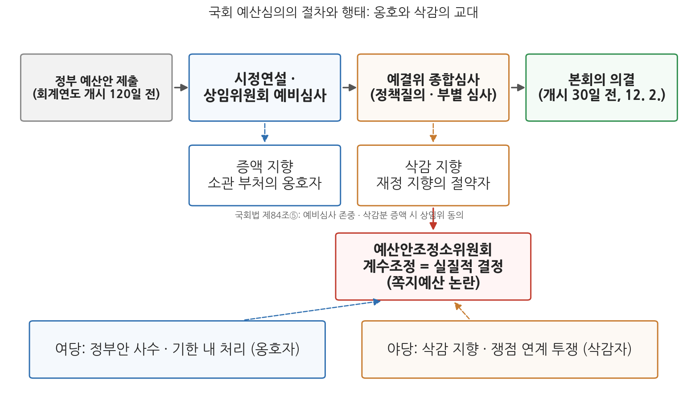
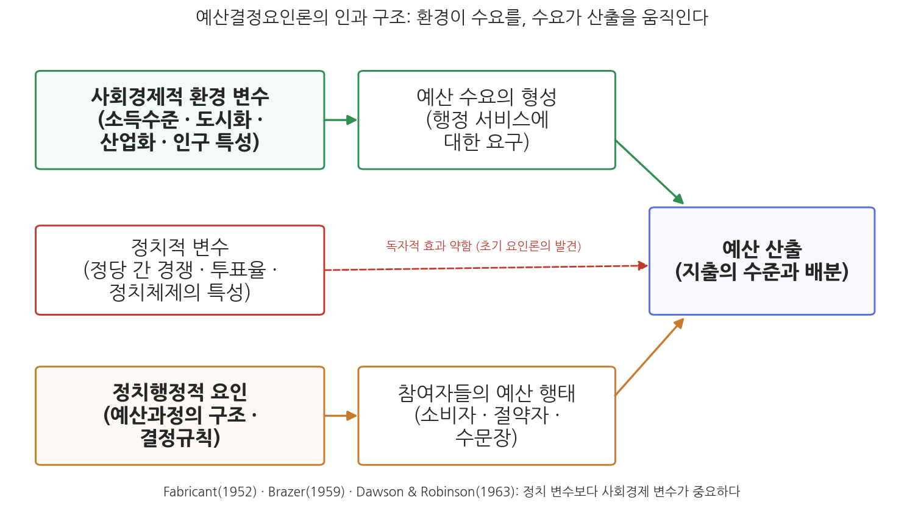

11주차 2차시. 예산행태론 (2): 국회의 예산심의 행태와 예산결정요인론
최종 수정: 2026-08-13 · 이 교재는 학기 중에도 계속 업데이트됩니다
국회는 국가의 예산안을 심의·확정한다. (대한민국 헌법 제54조 제1항)
이 장에서 배우는 것
1년 간격의 두 장면을 나란히 놓고 시작하자. 2024년 12월 10일, 국회는 2025년도 예산안을 총지출 673.3조 원으로 확정했다. 여야 합의 없이 야당이 정부안에서 4.1조 원을 감액한 수정안을 단독으로 통과시킨 헌정 사상 첫 사례였다. 꼭 1년 뒤인 2025년 12월 2일, 같은 국회는 2026년도 예산안을 헌법상 법정기한 안에 여야 합의로 처리했다. 2021년 이후 5년 만의 기한 내 합의 처리였다. 1년 사이에 국회가 갑자기 성숙해진 것일까. 그보다는 자리가 바뀌었다고 보는 편이 정확하다. 그 사이 정권이 교체되면서 감액을 주도하던 야당은 정부 예산안을 지켜야 할 여당이 되었고, 예산안을 방어하던 여당은 심의의 칼을 쥔 야당이 되었다. 행태를 결정한 것은 의원 개개인의 품성이 아니라 여당과 야당이라는 자리였던 셈이다.
1차시에서 우리는 행정부 안의 세 배우, 곧 소비자인 부처, 절약자이자 수문장인 기획예산처, 수문장인 대통령을 보았다. 이번 차시는 무대를 국회로 옮긴다. 국회 전체는 어떤 산출을 내는가, 상임위원회와 예산결산특별위원회는 왜 반대 방향으로 움직이는가, 선심성 예산은 왜 근절되지 않는가, 그리고 여야의 행태는 무엇이 결정하는가. 마지막 절에서는 시야를 한 번 더 넓힌다. 참여자들의 행태가 아니라 사회경제적 환경이 예산을 결정한다고 주장하는 예산결정요인론을 살피고, 행태론이라는 접근 자체의 한계를 정리하면서 12주차의 예산이론으로 넘어갈 다리를 놓는다. 구체적으로 다음을 배운다.
- 국회 예산심의의 수동적 성격과 한계적 조정, 그리고 삭감 지향적 산출
- 상임위원회의 증액 지향(옹호자) 행태와 예산결산특별위원회의 삭감 지향 행태, 예산안조정소위원회의 계수조정
- 선심성 나눠 먹기 정치(pork barrel politics)와 쪽지예산, 여당과 야당의 행태 및 공수 교대
- 경직성 경비와 비경직성 경비, 사업 내용이 예산 행태에 미치는 영향
- 예산결정요인론의 사회경제 변수 대 정치 변수 논쟁과 예산행태론의 한계
이 장은 하나의 질문을 따라 전개된다. "국회는 예산을 어떻게 다루며, 행태만으로 예산을 설명할 수 있는가?"
2.1 국회 전체의 수동적·삭감 지향적 행태를 확인한다 → 2.2 상임위원회(증액)와 예산결산특별위원회(삭감)의 엇갈린 행태를 뜯어본다 → 2.3 선심성 예산과 여야의 행태, 공수 교대를 본다 → 2.4 예산결정요인론의 도전을 살피고 행태론의 한계를 정리한 뒤, 12주차의 예산이론을 예고한다.
2.1 국회 전체의 행태
수동적 참여자: 한계적 조정
국회는 예산결정에서 일반적으로 수동적 역할을 수행한다. 예산의 주도자는 행정부이며, 국회는 행정부가 편성해 온 예산안에 대해 금액의 한계적(marginal) 조정을 수행하는 데 그치는 경향이 있다. 이유는 구조적이다. 첫째, 행정부와 국회 사이에는 정보의 비대칭성이 있다. 수십만 개의 사업으로 이루어진 예산안의 내용을 가장 잘 아는 것은 그것을 만든 부처와 기획예산처이며, 국회가 가진 정보와 분석 역량은 이에 미치지 못한다. 둘째, 심의 시간이 부족하다. 헌법 제54조는 회계연도 개시 90일 전까지 정부가 예산안을 제출하고 국회가 30일 전까지 의결하도록 하므로, 국회에 주어진 시간은 원칙적으로 60일 남짓이며 실제 심사가 이루어지는 기간은 더 짧다. 셋째, 10주차 2차시에서 본 것처럼 헌법 제57조는 국회가 정부 동의 없이 지출예산 각 항의 금액을 늘리거나 새 비목을 설치할 수 없게 하여, 국회의 역할을 구조적으로 삭감 중심에 묶어 둔다.
그렇다고 국회의 예산심의 역할을 과소평가할 수는 없다. 예산결정은 행정부와 국회라는 두 기관 사이의 예산상 상호작용의 결과이며, 행정부는 편성 단계에서부터 국회 심의를 예상하고 움직인다. 산출의 측면에서 국회는 삭감 지향적 행태를 보이는 것이 일반적이다. 정부안보다 늘려서 확정되는 일은 드물고, 소폭의 순감이 통례다.
정부는 2026년도 예산안을 총지출 728.0조 원으로 편성해 국회에 제출했다. 국회는 심의 과정에서 정책펀드·AI 지원 등에서 4.3조 원을 감액하고 미래 성장동력·민생·재해예방·지역경제에 4.2조 원을 증액하여, 2025년 12월 2일 총지출 727.9조 원으로 의결·확정했다. 정부안 대비 순감은 0.1조 원으로 총지출의 0.01% 수준이었고, 총수입은 정부안보다 1.0조 원 늘어난 675.2조 원으로 확정되었다. 법정기한(12월 2일) 내 여야 합의 처리는 2021년 이후 5년 만이었다. (출처: 대한민국 정책브리핑, 2025-12-02)
이 사례가 보여 주는 것은 한계적 조정의 실제 모습이다. 총량 기준으로 국회의 손질은 728조 원 가운데 0.1조 원, 소수점 아래의 조정에 그쳤다. 하지만 총량의 안정이 심의의 무력함을 뜻하지는 않는다. 감액 4.3조 원과 증액 4.2조 원이 거의 같은 규모로 맞물려 있다는 점에 주목해야 한다. 국회는 총량을 지키는 대신 그 안에서 정부 우선순위의 일부를 지우고 자신의 우선순위를 채워 넣었다. 요컨대 국회 심의의 산출은 총량의 한계적 조정과 내용의 재구성이 결합된 것이며, 무엇이 지워지고 무엇이 채워지는가에 다음 절에서 볼 위원회와 정당의 행태가 새겨져 있다.
2.2 상임위원회와 예산결산특별위원회
상임위원회: 소관 부처의 옹호자
국회 예산심의의 첫 관문인 상임위원회는 증액 지향적이다. 상임위원회는 소관 부처의 예산안을 예비심사하는 동시에 입법과 그 밖의 의안을 다루는 위원회인데, 예산심의에서는 삭감보다 증액 행태가 더 많이 나타난다. 상임위 의원들과 소관 부처가 서로를 이익의 상대로 인식하기 때문이다. 부처는 상임위의 지원으로 예산을 지키고, 의원은 부처의 사업으로 성과를 만든다. 소관 부처와의 사이에는 일종의 연대의식까지 존재하여, 상임위는 부처의 사업에 호의적이고 부처의 입장을 옹호하는 경향을 보인다. 1차시의 언어로 옮기면 상임위원회는 소관 부처와 한편이 된 옹호자, 곧 선별적 소비자다.
상임위의 행태는 고객과의 관계로 살펴보면 더 잘 이해된다. 첫째, 지역 선거구민과의 관계에서 의원은 소관 부처의 예산 요구가 자기 선거구에 혜택으로 돌아가기를 원하므로, 세출예산 측면에서 선별적으로 사업 지향성을 보인다. 둘째, 일반 시민과의 관계에서는 낮은 조세 부담을 추구하므로, 세입예산 측면에서 재정 지향성을 보인다. 지출은 늘리고 부담은 줄이려는 이 조합은 모순처럼 보이지만, 지출의 편익은 지역구에 집중되고 조세의 부담은 전국에 분산되기에 의원 개인에게는 합리적 선택이 된다. 셋째, 소관 부처와의 관계에서는 방금 본 옹호와 연대가 나타난다. 상임위별로 행태의 차이도 관찰된다. 예산조정률과 수정률이 비교적 높으면서 증액을 얻어 내는 기관들은 대체로 지역구의 이해와 관련된 사업을 수행하고 전국적으로 일선기관을 가진 부처들이며, 국토교통이나 산업 분야 상임위의 증액 지향이 거론되는 이유가 여기에 있다.
예산결산특별위원회: 종합심사의 삭감자
예산결산특별위원회(예결위)는 삭감 지향적이다. 소관 부처의 예산만 보는 상임위와 달리 예결위는 예산안 전체를 종합심사하기 때문에, 국민의 조세 부담이라는 관점에서 재원 규모를 고려하는 재정 지향성을 추구하고, 행정부 제출 예산에 대한 삭감과 조정의 역할을 수행한다. 국회법 제45조에 따라 예결위는 예산안·기금운용계획안·결산을 심사하는 특별위원회로 상설화되어 있으며, 위원 수는 50명이고 위원의 임기는 1년이다. 전체를 보는 자리이므로 개별 부처와의 연대가 형성되기 어렵고, 그만큼 절약자 행태가 나타나기 쉽다. 1차시에서 본 행정부 내부의 구도가 국회 안에서 반복되는 셈이다. 부처와 상임위가 옹호자 짝을 이루듯, 기획예산처와 예결위는 삭감자 짝을 이룬다.
예비심사와 종합심사의 관계는 국회법이 정하고 있다.
"⑤ 예산결산특별위원회는 소관 상임위원회의 예비심사 내용을 존중하여야 하며, 소관 상임위원회에서 삭감한 세출예산 각 항의 금액을 증가하게 하거나 새 비목(費目)을 설치할 경우에는 소관 상임위원회의 동의를 받아야 한다. ..."
무슨 뜻인가. 예결위는 상임위의 예비심사 내용을 존중해야 하지만 그에 구속되지는 않는다. 실제로 예결위 종합심사에서는 상임위 수정 내용과 별도의 독자적 수정이 이루어지며, 예결위에서 의결된 예산안이 거의 그대로 본회의를 통과하는 경향이 있다. 조문이 굳이 동의 요건을 붙인 지점을 눈여겨보자. 상임위가 깎은 것을 예결위가 되살리려면 상임위 동의가 필요하다. 증액 지향의 상임위와 삭감 지향의 예결위가 부딪히는 전형적 상황을 예상하고 절차의 교통정리를 해 둔 것이다. 거꾸로 상임위가 늘린 것을 예결위가 깎는 데는 동의가 필요 없으므로, 제도는 전체적으로 삭감 쪽에 기울어 있다. 헌법 제57조의 증액 동의권 제한과 함께, 국회 예산심의의 제도 설계가 절약자 행태를 뒷받침하고 있는 것이다.
예결위 종합심사에서 가장 중요한 과정은 예산안조정소위원회(예산조정소위)의 계수조정이다. 종합정책질의나 부별 심사보다 이 소위의 조정 작업이 실질적인 예산조정으로, 개별 사업의 증액과 감액이 여기서 최종 결정되기 때문에 권한이 막강하다. 국회의 예산심의는 상임위 심의보다 예결위 심의가, 예결위 안에서는 예산조정소위의 계수조정이 결정적이라고 볼 수 있다. 문제는 이 핵심 무대의 전문성과 투명성이다. 예결위원의 임기는 1년이어서 심의 경험이 축적되기 어려운데도 예산에 대한 영향력 때문에 누구나 맡고 싶어 하는 자리가 되었고, 계수조정의 막바지에는 소위 안의 비공식 협의체(이른바 소소위)에서 회의록 없이 쟁점 예산이 타결되는 관행이 반복된다는 지적이 언론과 학계에서 이어져 왔다. 다음 절에서 볼 쪽지예산이 파고드는 지점도 바로 이 계수조정 단계다.

그림 11-3을 읽는 법은 이렇다. 가운데 흐름이 정부 예산안 제출(회계연도 개시 120일 전)에서 시정연설과 상임위 예비심사, 예결위 종합심사를 거쳐 본회의 의결(30일 전, 12월 2일)에 이르는 공식 절차이고, 각 단계에 붙은 작은 상자가 그 단계의 지배적 행태다. 아래의 여당·야당 상자는 심의 전 과정에 걸쳐 작용하는 정당의 압력을 나타낸다. 이 그림에서 알 수 있는 것은 국회 심의가 증액 지향(상임위)과 삭감 지향(예결위·본회의)의 단계를 교대로 통과하는 구조이며, 실질 결정이 예산안조정소위라는 좁은 관문에 집중되어 있다는 점이다.
2.3 선심성 예산과 여야의 행태
선심성 나눠 먹기: 구조가 만드는 행태
예결위원들의 예산심의와 관련해 가장 자주 지적되는 문제는 선심성 나눠 먹기 정치(pork barrel politics)가 보편적 행태로 나타난다는 점이다. 국회의원에게는 지역구의 지지 기반 유지가 가장 중요하므로, 의원은 지역 주민을 위한 정부사업 유치의 압력을 상시적으로 받는다. 그 결과 국회의 예산심의가 행정부 견제와 통제라는 공익 추구보다는, 다른 지역구 의원들과 협력하여 서로 자기 지역구에 유리한 사업의 예산을 확보하는 데 몰두하는 문제가 발생한다. 견제해야 할 의원들이 나눠 먹기의 동업자가 되는 것이다.
선심성 나눠 먹기 정치(pork barrel politics)는 의원들이 국가 전체의 편익보다 자기 지역구나 지지집단에 돌아갈 사업 예산을 확보하는 데 몰두하고, 이를 위해 서로의 지역구 사업을 눈감아 주며 협력하는 행태를 말한다. 편익은 특정 지역에 집중되고 비용은 전 국민의 세금으로 분산되는 분배정책(distributive policy) 영역에서 빈번하게 나타난다(Lowi, 1964). 한국에서는 쪽지예산이 그 대표적 통로로 거론된다. 쪽지예산은 예산안조정소위의 계수조정 단계에서 정식 심사 절차를 거치지 않은 지역구 민원성 사업이 의원들의 쪽지(요즘은 문자메시지)로 전달되어 증액 명단에 끼어드는 관행을 가리키는 말이다.
선심성 예산이 분배정책 분야에서 빈번한 이유는 비용과 편익의 비대칭에 있다. 지역구에 도로가 놓이면 편익은 소수의 지역 주민에게 집중되어 눈에 잘 띄지만, 그 비용은 전체 납세자에게 얇게 분산되어 아무도 아파하지 않는다. 편익을 받는 쪽은 열심히 조직되고 비용을 내는 쪽은 침묵하므로, 의원에게는 유치가 남는 장사가 된다. 사회간접자본(SOC) 예산이 국회 심의 단계에서 늘어나는 경향이 반복되는 것도 이 구조 때문이다. 다만 유의할 점이 있다. 지역구의 이익을 대변하는 것 자체는 대의제가 예정한 의원의 기능이기도 하다. 문제의 핵심은 지역 사업의 유치가 아니라, 그것이 정식 심사와 기록을 우회하는 비공식 경로로 이루어져 책임성과 투명성을 훼손한다는 데 있다.
여당과 야당: 자리가 만드는 공수
의회의 예산심의 과정은 정당의 영향을 받지만, 그 방식은 흔히 생각하는 것과 다르다. 한국에서 정당의 정강이나 이념은 예산심의 행태를 설명하는 데 설득력이 약하다. 진보 정당이라고 늘 지출을 늘리자 하고 보수 정당이라고 늘 줄이자 하는 것이 아니기 때문이다. 행태를 가르는 것은 이념이 아니라 여당과 야당이라는 자리다. 여당은 예산심의 과정에서 행정부의 예산안을 기한 내에 거의 수정 없이 통과시키기 위해 최대한의 노력을 기울인다. 정부의 성공이 곧 여당의 성공이므로, 여당은 심의 단계에서 행정부 옹호자로 행동한다. 따라서 예산심의에서 비판과 행정 감독의 기능은 야당의 몫이 된다. 야당의 가장 두드러진 특징은 예산심의를 정치적 이득을 극대화할 기회로 여긴다는 점이다. 야당은 정부 예산안이 정권 유지에 도움이 된다는 인식 아래 이를 수정하려는 삭감 지향적 태도가 훨씬 강하며, 예산과 직접 관련이 없는 정치적 쟁점을 심의에 연계해 정치적 입지를 강화하거나 예산을 볼모로 이익을 얻으려는 예산 연계 투쟁을 상례화하기도 한다.
이 논리의 강력한 증거가 공수 교대다. 여야의 행태가 이념의 산물이라면 정권이 바뀌어도 각 정당의 행태는 유지되어야 한다. 그러나 실제로는 자리가 바뀌면 행태가 통째로 뒤바뀐다.
2024년 12월 10일, 국회는 2025년도 예산안을 총지출 673.3조 원으로 확정했다. 당시 야당이던 더불어민주당이 정부안에서 4.1조 원을 감액한 수정안을 여야 합의 없이 단독으로 통과시켰고, 이는 야당 주도의 감액 예산이 처리된 헌정 사상 첫 사례로 기록되었다. 2025년 6월 정권이 교체되었고, 그해 12월 2일 국회는 이재명 정부의 첫 본예산인 2026년도 예산안(총지출 727.9조 원, 전년 대비 8.1% 증가)을 법정기한 내에 여야 합의로 처리했다. 이번에는 여당이 된 더불어민주당이 역대 최대 규모의 정부 예산안을 방어하는 자리에 섰고, 감액을 요구하는 역할은 야당이 된 국민의힘의 몫이었다. (출처: 대한민국 정책브리핑, 2024-12-10 및 2025-12-02)
이 사례가 보여 주는 것은 예산심의 행태가 정당의 고정된 속성이 아니라 여당·야당이라는 자리의 함수라는 행태론의 핵심 명제다. 같은 정당이 야당일 때는 헌정 사상 첫 단독 감액 처리를 주도했고, 여당이 되자 확장 예산의 방어자가 되었다. 1차시의 유의 박스에서 본 명제, 곧 역할은 기관의 이름이 아니라 자리를 따라간다는 관찰이 정당에도 그대로 적용되는 것이다. 아울러 이 사례는 분점정부 여부가 심의의 강도를 좌우한다는 점도 보여 준다. 2024년의 단독 감액은 야당이 국회 다수당이었기에 가능한 일이었다.
2.4 예산결정요인론과 행태론의 한계
예산 내용과 예산 행태: 무엇이 심의의 표적이 되는가
행태는 참여자만이 아니라 예산의 내용에 따라서도 달라진다. 경직성 경비, 곧 법령상 지급 의무가 있는 의무적 지출은 예산사정과 심의 단계에서 큰 수정 없이 쉽게 결정된다. 깎을 수 있는 재량의 여지가 없기 때문이다. 반면 비경직성 경비인 재량적 지출, 그중에서도 사업성 지출은 삭감의 정도가 크고 집중적인 예산 검토의 대상이 된다. 한국은 2013년도 예산안부터 재정지출 사업을 의무지출과 재량지출로 구분하여 국가재정운용계획에 포함해 국회에 제출하도록 하고 있다. 의무지출에는 지방교부세와 지방교육재정교부금 같은 지방이전재원, 기초생활보장급여·공적연금·기초연금·노인장기요양보험 등 복지 분야의 법정지출, 그리고 이자지출 등이 속한다. 사정기관과 국회의 절약자 행태가 실제로 작동하는 영역은 예산 전체가 아니라 재량지출이라는 부분집합인 셈이며, 1차시에서 본 2027년도 예산안편성지침이 재량지출 15% 감축을 앞세운 것도 같은 이유다.
사업의 내용과 성질도 행태에 영향을 미친다. 고위 관료들이 특정 사업을 다른 사업보다 선호하면 그 사업은 예산편성에서 더 많은 지지와 예산을 얻는다는 것이 미국 예산 자료의 분석으로 확인되었고(Natchez & Bupp, 1973), 예산심의 단계에서도 요구액에 담긴 사업이 무엇인지(인사, 연구개발 등)에 따라 수정 규모가 달라진다는 연구가 있다(Kanter, 1972). 요컨대 행태는 참여자의 자리와 예산의 내용이 만나는 지점에서 결정된다.
예산결정요인론: 환경이 예산을 결정하는가
여기까지의 행태론은 예산을 참여자들의 상호작용으로 설명했다. 그런데 이 설명 전체에 도전하는 연구 전통이 있다. 이론적으로 예산의 모든 과정은 국민의 욕구를 정부 행동으로 옮겨 주는 과정이며, 예산 내용의 결정은 예산 수요를 형성하는 환경적 요인과 예산과정의 특성이라는 정치행정적 요인의 영향을 함께 받는다. 예산결정요인론(정책결정요인론)은 이 가운데 환경적 요인의 결정력을 계량적으로 검증한 연구 흐름이다.
예산결정요인론(determinants of public expenditure)은 정부 지출의 수준과 구성이 무엇에 의해 결정되는가를 계량 분석으로 검증한 연구 전통으로, 정책결정요인론의 예산 분야 적용이다. 사회경제적 변수(소득수준, 도시화, 산업화, 인구 특성 등)가 예산 수요를 형성하여 예산 산출에 영향을 미친다고 보며, 정치적 변수(정당 간 경쟁, 투표율, 정치체제의 특성 등)의 독자적 영향은 상대적으로 작다는 초기 연구 결과로 논쟁을 일으켰다.
이 전통의 출발은 재정학 쪽이었다. 패브리컨트(Fabricant)는 1900년 이후 미국 정부 활동의 추세를 분석하면서 주·지방정부 지출의 차이가 소득수준, 도시화, 인구밀도 같은 사회경제 변수로 상당 부분 설명된다는 것을 보였고(Fabricant, 1952), 브레이저(Brazer)의 도시 지출 연구가 이를 이었다(Brazer, 1959). 논쟁에 불을 붙인 것은 정치학자들의 후속 연구였다. 도슨과 로빈슨(Dawson & Robinson)은 미국 주정부의 복지정책을 분석하여, 정당 간 경쟁이 치열한 주가 복지지출에 더 적극적일 것이라는 통념과 달리, 정당 경쟁의 효과는 소득수준 같은 사회경제 변수를 통제하면 대부분 사라진다는 결과를 내놓았다(Dawson & Robinson, 1963). 정책 내용이 정치 체제의 특성에 의해 좌우된다는 전통적 믿음과 반대로, 정치적 요인보다 사회경제적 요인이 더 중요한 영향을 미친다는 것이다. 이 결론은 정치학계에 충격을 주었다. 정치가 중요하지 않다면, 참여자들의 행태를 애써 관찰하는 일은 무엇을 설명하는가.

그림 11-4를 읽는 법은 이렇다. 위 줄의 굵은 경로가 요인론이 강조하는 인과 사슬로, 사회경제적 환경 변수가 예산 수요를 형성하고 그 수요가 예산 산출로 이어진다. 아래 줄은 이 장과 1차시에서 본 행태론의 경로로, 예산과정의 정치행정적 요인과 참여자 행태가 산출에 영향을 미친다. 정치적 변수에서 산출로 가는 점선은 초기 요인론 연구에서 그 효과가 약하거나 사회경제 변수에 흡수되는 것으로 나타났음을 표시한 것이다. 이 그림에서 알 수 있는 것은 두 접근이 같은 산출을 서로 다른 원인으로 설명하는 경쟁 관계이면서, 동시에 수요(환경)와 과정(행태)이라는 서로 다른 고리를 맡는 보완 관계이기도 하다는 점이다.
물론 예산결정요인론 자체도 여러 문제점을 지닌다. 분석이 계량화하기 쉬운 하드 변수에 치우쳐 정치 변수의 측정이 부실했고, 지출 수준이라는 결과만 볼 뿐 그 결과가 만들어지는 과정은 블랙박스로 남겨 두었다. 정치 변수의 효과가 작게 나온 것은 정치가 중요하지 않아서가 아니라 정치를 제대로 재지 못했기 때문이라는 반비판도 유력하다. 그럼에도 요인론은 예산결정에서 사회경제적 변수가 매우 중요하다는 점, 곧 참여자들이 벌이는 게임의 판 자체가 환경에 의해 짜인다는 점을 보여 주었다는 데 의의가 있다.
행태론의 종합과 한계
이제 두 차시에 걸친 행태론을 종합하자. 예산과정 참여자들의 역할과 행태는 표 11-1처럼 정리된다.
표 11-1. 예산과정 참여자들의 역할과 행태 종합
| 역할 | 참여자 | 지향 |
|---|---|---|
| 소비자·주창자 | 행정 부처, 상임위원회, 여당 | 사업 지향, 증액 지향 |
| 절약자·국고 수호자 | 기획예산처(중앙예산기관), 예산결산특별위원회, 야당 | 재정 지향, 삭감 지향 |
| 수문장 | 대통령(행정수반), 부분적으로 예산결산특별위원회 | 균형 지향 (사업과 재정의 동시 고려) |
이 표가 보여 주는 대칭은 인상적이다. 행정부 안에서 부처와 기획예산처가 이루는 요구와 사정의 짝이, 국회 안에서는 상임위와 예결위의 짝으로, 정당 구도에서는 여당과 야당의 짝으로 반복된다. 예산과정 전체가 옹호와 절제의 역할 분담을 겹겹이 쌓아 올린 구조인 셈이다. 하지만 행태론에는 분명한 한계가 있다. 첫째, 역할의 정형화에는 예외가 많다. 공수 교대가 보여 주듯 행태는 자리에 따라 뒤바뀌고, 확장재정기의 중앙예산기관처럼 같은 자리의 행태도 정치 환경에 따라 이동한다. 둘째, 행태론은 참여자들이 어떻게 움직이는가를 기술할 뿐, 그 상호작용이 왜 그러한 배분 결과를 낳는가를 설명하는 이론으로는 불완전하다. 예산결정요인론이 보여 주었듯 예산 산출은 행태 밖의 환경 변수에 의해서도 결정되기 때문이다. 셋째, 행태론은 규범적 질문에 침묵한다. 부처는 요구하고 사정기관은 깎는다는 관찰은, 그렇다면 어떤 근거로 배분해야 옳은가라는 질문에 답을 주지 않는다. 바로 이 질문, 곧 어떠한 근거로 X달러를 사업 B 대신 사업 A에 배분하는가라는 키(V. O. Key)의 질문에서 예산이론의 본격적인 역사가 시작된다. 12주차에서 총체주의와 점증주의라는 두 고전적 대답을 다룬다.
요약
국회는 예산결정에서 일반적으로 수동적 참여자로, 정보의 비대칭성과 심의 시간의 부족, 헌법 제57조의 증액 제한 속에서 행정부 예산안에 대한 한계적 조정을 수행하며 산출 면에서 삭감 지향적 행태를 보인다. 2026년도 예산안 심의에서 국회가 총지출 728.0조 원의 정부안을 감액 4.3조 원, 증액 4.2조 원, 순감 0.1조 원으로 확정한 것은 총량의 한계적 조정과 내용의 재구성이 결합된 전형적 산출이다. 위원회 수준에서는 행태가 갈린다. 상임위원회는 지역구민(세출의 사업 지향), 일반 시민(세입의 재정 지향), 소관 부처(옹호와 연대)라는 고객관계 속에서 증액 지향적 옹호자로 행동하고, 예산안 전체를 종합심사하는 예산결산특별위원회는 삭감 지향적 절약자로 행동하며, 실질적 결정은 예산안조정소위원회의 계수조정에 집중된다. 국회법 제84조제5항의 예비심사 존중과 동의 요건은 두 위원회의 엇갈린 행태를 조정하는 제도 장치다. 선심성 나눠 먹기 정치는 편익의 지역 집중과 비용의 전국 분산이라는 분배정책의 구조에서 나오는 보편적 행태로, 한국에서는 쪽지예산 관행으로 나타나며, 문제의 핵심은 지역 사업 유치 자체보다 비공식 경로가 책임성을 훼손한다는 데 있다. 여야의 행태는 이념보다 자리의 함수여서 여당은 정부안 옹호, 야당은 삭감과 쟁점 연계로 움직이며, 2025년도 예산안의 야당 단독 감액 처리와 2026년도 예산안의 여야 합의 처리가 보여 준 1년 만의 공수 교대가 이를 실증한다. 행태는 예산 내용에 따라서도 달라져 의무지출은 수정 없이 통과되고 재량지출이 심의의 표적이 된다. 예산결정요인론은 소득·도시화 같은 사회경제 변수가 예산 수요를 거쳐 산출을 결정하며 정치 변수의 독자 효과는 약하다는 결과(패브리컨트, 브레이저, 도슨과 로빈슨)로 행태론에 도전했고, 측정과 과정의 블랙박스라는 한계에도 불구하고 행태가 벌어지는 판 자체가 환경에 의해 짜인다는 통찰을 남겼다. 행태론은 참여자 행태의 규칙성을 보여 주지만 배분의 근거를 설명하거나 처방하는 이론으로는 불완전하며, 이 공백에서 12주차의 예산이론이 출발한다.
토론·복습 문제
11-5. (서술형 연습) 상임위원회의 증액 지향과 예산결산특별위원회의 삭감 지향이 각각 어떤 요인에서 비롯되는지 고객관계(지역구민, 일반 시민, 소관 부처)와 제도(국회법 제45조의 구성·임기, 제84조제5항의 심사 구조)를 근거로 설명하고, 이 구도가 1차시에서 본 행정부 내부의 부처·중앙예산기관 관계와 어떻게 닮았는지 서술하시오.
11-6. (계산·해석형) 2026년도 예산안 심의에서 정부안 총지출은 728.0조 원, 국회 확정액은 727.9조 원이었으며 감액은 4.3조 원, 증액은 4.2조 원이었다. 순수정률(순감액/정부안)과 총조정률((감액+증액)/정부안)을 각각 계산하고, 두 수치의 차이가 국회 예산심의의 어떤 특징을 드러내는지 한계적 조정과 내용의 재구성 개념으로 해석하시오.
11-7. (찬반 토론) "쪽지예산은 대의제 민주주의를 훼손하는 병리이므로 전면 금지해야 한다"는 주장에 대해 찬성과 반대의 논거를 각각 제시하고 자신의 입장을 정하시오. 지역 이익 대표라는 의원의 기능, 분배정책의 비용·편익 구조, 예산안조정소위 심사의 투명성 문제를 논거에 포함하시오.
11-8. 예산결정요인론의 결론대로 사회경제적 변수가 예산 산출을 대부분 결정한다면, 참여자들의 행태를 연구하는 예산행태론은 무의미해지는가. 두 접근이 설명하는 대상의 차이(산출의 수준 대 산출이 만들어지는 과정)와 요인론의 방법론적 한계를 근거로 자신의 견해를 논증하시오.